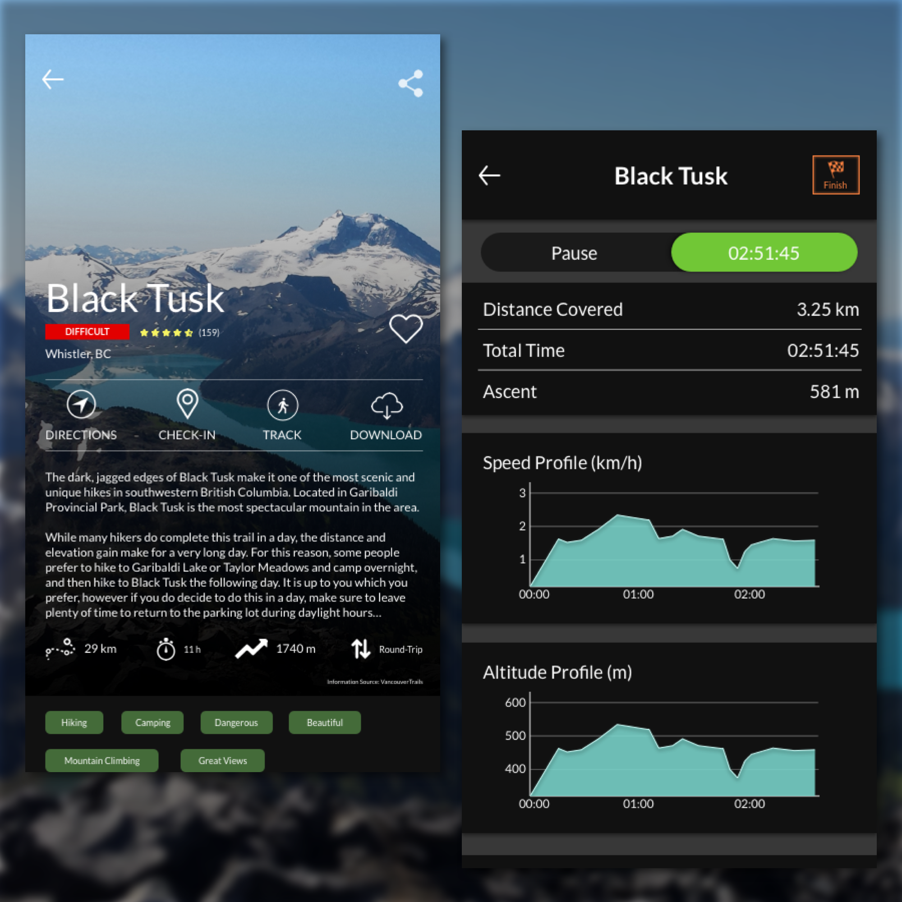

Day 71 - Black Tusk Stats
Happy with the result. Unhappy with the process. For some reason, I was dreading the whole design process today. I took a lot more breaks than I usually do and I wasn't completely enjoying myself. It's sad to say, but I did this design not because I wanted to, but because I had to.
The hardest thing I felt was figuring out what users would want on the hike information page. I used my experience to solve this problem. The main things I look at are the time it'll take to complete the hike, how far it is from my current location, the difficulty level, and its ratings and pictures. I wanted to make sure all the options were available for the user. I added a comments section, which allows the user to read the hikes' pros and cons. By clicking Track on the hike information screen, it'll direct the user to the Tracking page.
The tracking page starts once the user clicks "Track." On this page, it'll show statistics of the hiker's information, such as how far they have gone in the hike, how long it has been, and the ascent as well. Instead of using the word "Start" for the green button, I decided to place the time instead. Placing "Start" might confuse the hiker, as it might mean "Start Fresh" or "Start Again" to them. When I got to the graphs, I began to get my momentum back. I can definitely say that I had the most fun creating those graphs. They were something different than what I usually do and I really liked creating the style and colour for them as well.
I really hope I will find that momentum right from the start, so there will be no pauses through the creation of the design. I need to find a way to continuously stay motivated and hungry for the next design style.